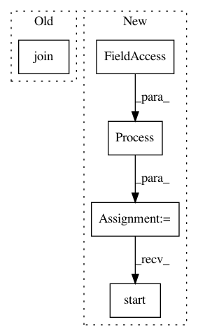

c66273e95dd94e5553a4ea3066c60ccc566cad5d,tests/test_scheduler.py,TestScheduler,setUpClass,#Any#,22
Before Change
model = Classifier(base_model=GPT)
model.fit(["A", "B"], ["a", "b"])
model.save(os.path.join(cls.folder, cls.model2))
@classmethod
def tearDownClass(self):
After Change
@classmethod
def setUpClass(cls):
p = Process(target=cls._setup)
p.start()
p.join()
p.terminate()
@classmethod
In pattern: SUPERPATTERN
Frequency: 3
Non-data size: 5
Instances
Project Name: IndicoDataSolutions/finetune
Commit Name: c66273e95dd94e5553a4ea3066c60ccc566cad5d
Time: 2020-04-13
Author: madison@indico.io
File Name: tests/test_scheduler.py
Class Name: TestScheduler
Method Name: setUpClass
Project Name: automl/auto-sklearn
Commit Name: 8442321b9b7a7cef7e3806b525965c36cea1549e
Time: 2020-09-25
Author: feurerm@informatik.uni-freiburg.de
File Name: examples/60_search/example_parallel_manual_spawning.py
Class Name:
Method Name:
Project Name: MaybeShewill-CV/CRNN_Tensorflow
Commit Name: ed66679b71989f55cc25d7adf69e386ad27c2063
Time: 2019-03-22
Author: luoyao@baidu.com
File Name: data_provider/tf_io_pipline_fast_tools.py
Class Name: CrnnFeatureWriter
Method Name: run